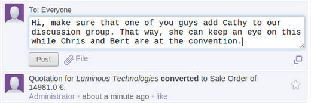
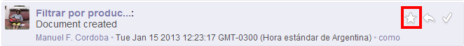

Mensajería |
  
|
Mensajería |
|
OpenERP fusiona las aplicaciones de negocio y las redes sociales. La aplicación de red social se basa en el motor Open Chatter y tiene las siguientes características principales:
•Facilita las conversaciones con los usuarios internos o externos (clientes, proveedores, ...), uniendo el poder de mensajería instantánea con mensajes de correo electrónico estándar;
•Organiza grupos de discusión, una alternativa a las listas de correo tradicionales;
•Amplía el alcance de estas conversaciones para incorporar discusiones alrededor y sobre los documentos comerciales;
•Incorpora un sistema de suscripción a cualquier evento de negocios, generando notificaciones;
•Muestra todos los mensajes y notificaciones de forma consolidada en la bandeja de entrada del usuario.
La función de conversación
Open Chatter proporciona una herramienta de comunicación simple para discutir entre colegas o contactos externos, ya sea con una persona o con un grupo.
Dos mecanismos se proporcionan para discutir o intercambiar documentos: un chat en tiempo real o mensajería asincrónica que proporciona una alternativa a los correos electrónicos.

Puede enviar mensajes a los usuarios internos o contactos externos como clientes y proveedores. La puerta de enlace de correo electrónico convierte automáticamente mensajes de correo electrónico entrantes en mensajes en su muro y los mensajes que se escriben en un contacto externo en un mensaje de correo saliente.
Hoy en día, las personas están sujetas a lo que otros deciden empujar a sus correos. OpenERP 7,0 da una alternativa al problema de las bandejas de entrada sobrecargadas mediante una modalidad "Push" y otra "Pull" de información.
OpenERP se diferencia a través de:
•Mensajes "para información" (Push): se puede tirar de ellos cuando se necesita información específica, que no requieren que se lean todos los días. Usted recibe sólo lo que decidió seguir. Es el 90% de sus correos electrónicos diarios. Usted puede leer desde el menú "Bandeja de entrada".
•Mensajes "para la acción": requieren su atención inmediata, que se los procese a todos. Usted puede leerlos desde la «a: Mí» del menú.
Esto permite a los usuarios centrarse sólo en los mensajes «de acción», que son alrededor del 10% de los correos electrónicos que recibimos diariamente. Pueden revisarse los mensajes «para información» sólo cuando se está buscando una información específica o si tienen el tiempo para procesarlos.
Grupos y listas de correo
Las discusiones pueden ser organizadas en grupos. Se pueden crear grupos de discusión para cualquier propósito, por ejemplo, «los miembros del Directorio», «ventas: mejores prácticas», «I + D» o «ideas de la comercialización».
Los usuarios pueden escribir mensajes a un grupo, adjuntar documentos a sus mensajes, responder a las discusiones anteriores, comentar mensajes de los demás y buscar en el historial de todas las conversaciones. Los usuarios pueden unirse o ser invitado a los grupos. Si lo hacen, recibirán toda discusión sobre estos grupos en su bandeja de entrada. Dependiendo de la privacidad del grupo, también puede leer los archivos del grupo, incluso si decide no seguir a este grupo.
Puede configurar la privacidad de cada grupo:
•Público: todos pueden ver mensajes relacionados con este grupo, incluyendo sus clientes y / o proveedores, a través de su portal. Ejemplo de grupo: «Noticias de empresa», «Empleo», «Próximos eventos», etc;
•Privado: sólo los seguidores de este grupo pueden ver los mensajes. Para llegar a ser un seguidor, tiene que ser invitado por un seguidor existente. Ejemplo de grupos privados: «Los miembros de la Junta», «recursos humanos», «Proyecto Cliente Privado Y»;
•Grupos seleccionados: Sólo permite seleccionar grupos de usuarios (como los grupos utilizados en los derechos de acceso) que pueden acceder a mensajes relacionados. Ejemplo: «Todos los empleados», «sólo las ventas», «Sólo los clientes», «Política del coche, para los empleados que tienen un vehículo de la empresa sólo».
También se pueden crear grupos en los que los usuarios se suscriben automáticamente de acuerdo con sus derechos de acceso. A modo de ejemplo, al instalar OpenERP, un grupo llamado «Whole Empresa» se crea automáticamente con todos sus empleados. Esto permite enviar fácilmente un mensaje a todos los empleados.
Su bandeja de entrada es una corriente, lo que permite tomar acciones
El objetivo buscado es que el sistema de mensajería OpenERP 7.0 sea una alternativa real a los correos electrónicos tradicionales. Que los usuarios recuperen el control de su bandeja de entrada fácilmente procesando cada mensaje entrante en un solo clic.
La bandeja de entrada OpenERP está entre una bandeja de entrada de correo electrónico tradicional y una lista de tareas, donde se procesan todos los elementos para vaciar la lista.
Al procesar tu bandeja de entrada, se puede tomar cinco acciones inmediatas con un clic en un mensaje o en un hilo todo a la vez:
•Respuesta en línea hace que responda a un mensaje super rápido y fácil. No se necesita más escribir el Asunto, perder el contexto, buscar destinatarios, etc;
•Puede marcar un mensaje como una tarea pendiente. De esta forma se elimina de su bandeja de entrada y se poner en una lista de tareas para el proceso posterior;

•Usted puede archivar / marcar como leído el mensaje para eliminarlo de la bandeja de entrada;
•Puede marcar su consentimiento sobre un mensaje con un solo clic, con el botón «me gusta»;
•Acceder rápidamente al documento relacionado a tomar cartas en el asunto. (Como la confirmación de una orden de venta o la aprobación de una solicitud de licencia, etc.).
De esta manera usted puede procesar su bandeja de entrada y tomar medidas rápidamente.
Las conversaciones alrededor de documentos empresariales
Algunas acciones son ahora específicas para el estado del documento OpenERP. Por ejemplo, se puede generar un correo electrónico cuando un documento cambia de estado (por ejemplo, el envío de una solicitud de cotización a un proveedor potencial). Esta acción ejecuta a un asistente extensible genérico redacción de correo electrónico capaz de utilizar plantillas de correos electrónicos.
La integración Open Chatter con los objetos permite a los participantes de los mismos especificar en que ocasiones desean ser notificados y comunicados. En cada objeto existe un check list de Acciones con las distintas alternativas.
Al hacer clic en el botón Invitar, se puede incluir a los usuarios en el proceso de seguir el objeto OpenERP a mano. A través del uso de la "siguiente" botón, el usuario puede optar por recibir información sobre los diferentes aspectos del proyecto.
Por otra parte, desde la vista de un objeto, OpenERP 7.0 ofrece al usuario la posibilidad de iniciar o participar en una conversación sobre el objeto. Por lo tanto, los mensajes enviados o recibidos desde el objeto serán visibles en tu bandeja de entrada, así como en la historia del documento comercial.
Cuando el usuario consulta la vista de página de un objeto, por ejemplo, un proyecto, toda la historia de las conversaciones en torno a ese objeto se muestra claramente por debajo de su punto de vista formulario. Como tal, los comentarios, mensajes y cambios de etapas del objeto puede ser consultada en forma integral. A modo de ejemplo, un usuario puede supervisar adecuadamente lo que ocurre con un objeto seleccionado que posee, supervisar las actividades directamente relacionadas con un objeto e intervenir preventivamente como un jefe de departamento, o como un gestor de calidad realiza una revisión de la calidad mediante la consulta de toda la historia del objeto.
Los usuarios pueden seguir lo que es de interés para ellos
Dado que los eventos pueden generar notificaciones, el sistema puede informar a los usuarios acerca de ellas. Esto crea una dinámica completamente nueva en la productividad del usuario y el rendimiento de la empresa. El usuario puede mantener un ojo en una operación crítica o un administrador pueden invitar a un usuario a seguir un proceso que evalúa puede ser crucial. A través de la suscripción a un grupo, el usuario es informado acerca de todos los eventos relacionados con un departamento dado, una organización sección transversal o un conjunto de eventos.